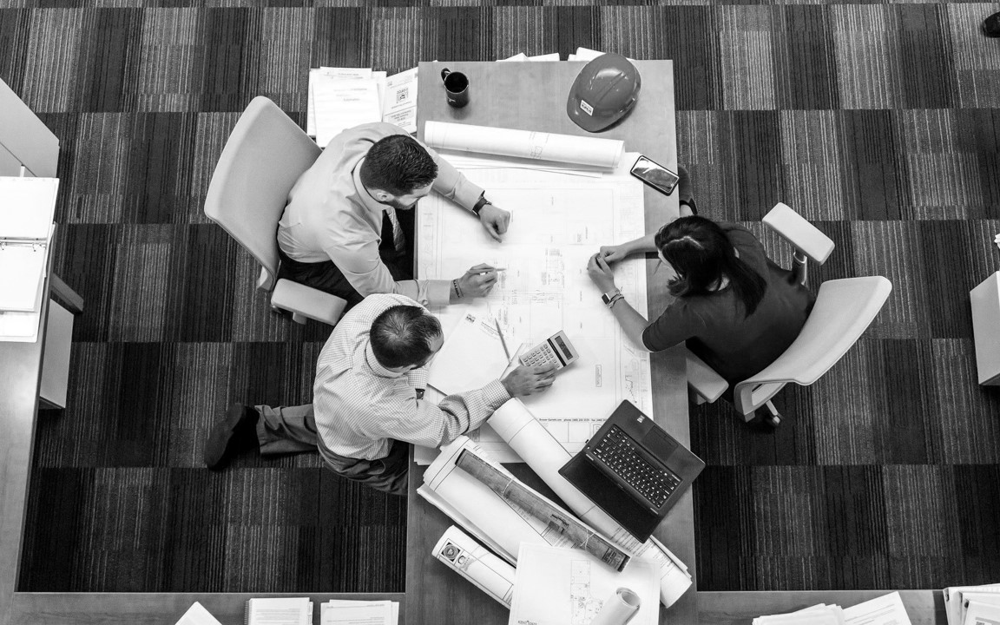

Déroulement projet tutoré
Dans cette section nous approfondirons
le déroulement de notre projet tutoré et son
organisation.ㅤㅤㅤㅤㅤㅤㅤㅤㅤㅤ

Dans cette section nous approfondirons
le déroulement de notre projet tutoré et son
organisation.ㅤㅤㅤㅤㅤㅤㅤㅤㅤㅤ
Au cours de ce semestre, nous nous sommes organisés de manière à être efficaces dès le début, en planifiant des rendez-vous hebdomadaires pour faire le point sur notre progression, tant avec le professeur qu'en groupe.
Dès la première séance avec mon binôme, après avoir défini les idées et notre fil conducteur (les méthodes d'affichage dans leur globalité), nous avons établi un plan pour ne pas nous laisser distancer par les objectifs que nous nous étions fixés (créer un site qui référence les méthodes d'affichage).
Nous avons réparti les tâches pour être efficaces :
Les premières séances, nous avons tous les deux fait des recherches
sur les méthodes d'affichage pour avoir des bases solides et étendre
la base de données.
Wassim Mesfioui s'est ensuite occupé de la création du site WEB et a
approfondi les recherches sur les méthodes d'affichage depuis les
années 1900.
Kévin Hacker a développé des recherches sur les méthodes d'affichage
des appareils en GEII et a créé un cube à LED comme méthode
d'affichage.
Dans une première partie, notre travail a consisté à faire des
recherches sur les différentes méthodes d'affichage qui ont existé,
comparer l'information et la synthétiser. Nous avons ensuite poursuivi
en étudiant les caractéristiques d'affichage des appareils du GEII pour
les remettre en avant et les partager.
Nous avons alors pris un rendez-vous pour en savoir plus sur les
différents appareils et pour pouvoir les prendre en photo.
Peu après, nous avons commencé à concevoir notre site WEB. Notre
objectif principal était d'avoir une page d'accueil sur les méthodes
d'affichage, ainsi que deux sous-pages dédiées aux méthodes d'affichage
en général et aux méthodes d'affichage en GEII.

Nos défis techniques durant ce semestre ont été variés, allant de la
création d'un site Web en utilisant HTML, CSS et JavaScript, à des
recherches sur l'évolution des méthodes d'affichage au fil des ans, nous
permettant de nous familiariser avec les technologies courantes.
Nous travaillons actuellement sur la réalisation d'un cube LED innovant,
utilisant une carte ARDUINO et des programmes développés avec Arduino.
Nous avons su nous organiser dès le départ et la répartition des tâches s'est effectuée de manière naturelle. La bonne cohésion d'équipe a permis à chacun de contribuer au projet.
Des légers retards qui nous ont poussés à dépasser nos limites.
"Au départ, notre travail consistait à créer une base de données. Nous avons ensuite décidé de pousser plus loin cette idée en créant un site web, puis en réalisant un cube LED en lien direct avec notre thème sur les méthodes d'affichage."
Présentation du projet tutoré et mise en place d'idées
Nous avons développé nos idées, notre planning et fait le point avec notre professeur responsable
Début des premières recherche sur les méthodes d'affichage où nous avons répertorié les méthodes d'affichage des années 1900 à nos jours
Recherches sur le tube cathodique, lcd, plasma…
Mise au point en binôme sur nos recherches + développement de fiches pour les différentes méthodes d'affichage
Mise au point avec notre professeur responsable et développement de l’idée sur les méthodes d’affichage en GEII
Recherche des méthodes d'affichage en général, mais également des méthodes d'affichage en GEII
Semaine de recherche
Réalisation de photos d'appareils de la GEII
Mise au point et mise en commun de notre travail
Début du travail sur le site WEB, partage d'idées et de design
Programmation HTML + CSS + JS + page d'accueil
Programmation HTML + CSS + JAVA sous page "Méthodes d'affichage en GEII" et "Méthodes d'affichage en général"
Programmation + Mise en point au vu d’un retour de notre travail
Programmation + Début du développement de notre propre méthode d’affichage, le cube à LED